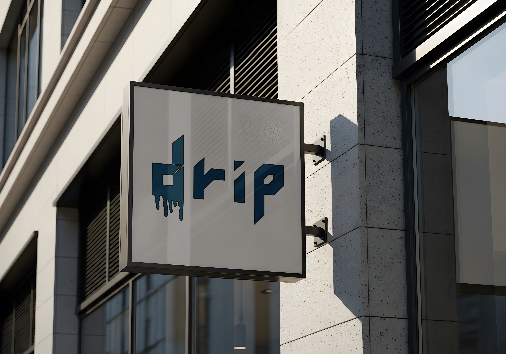
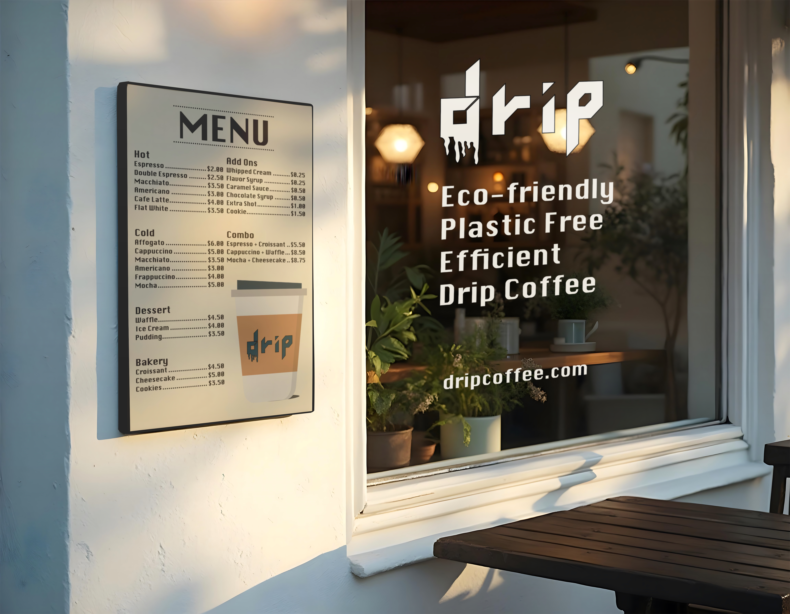
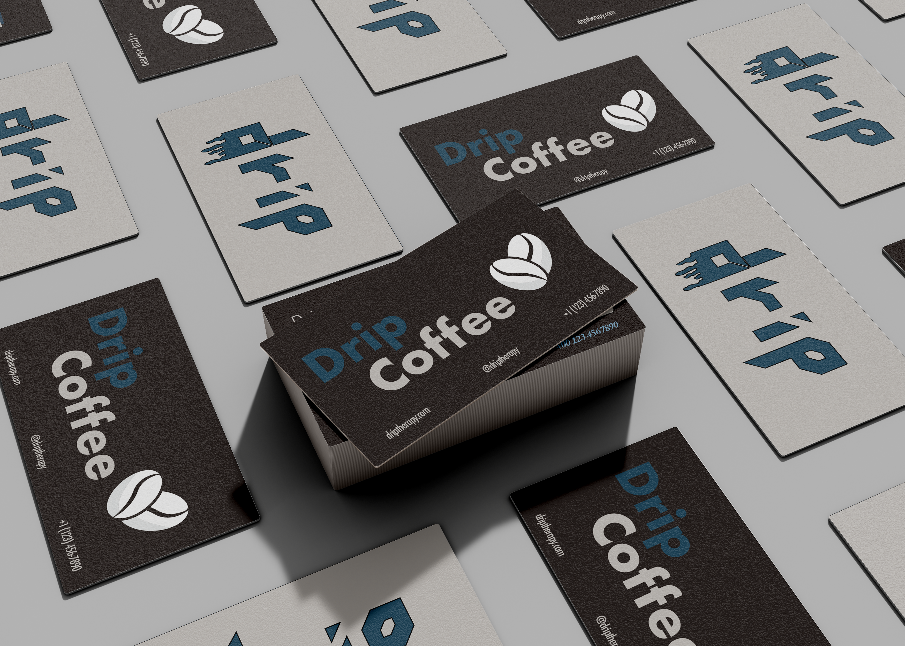
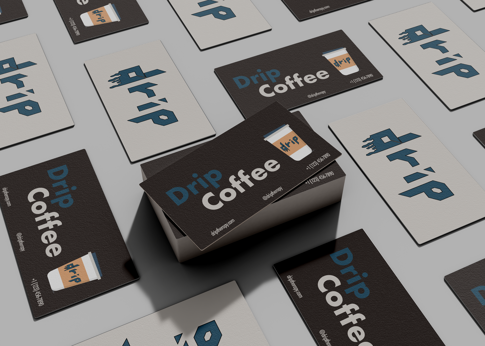
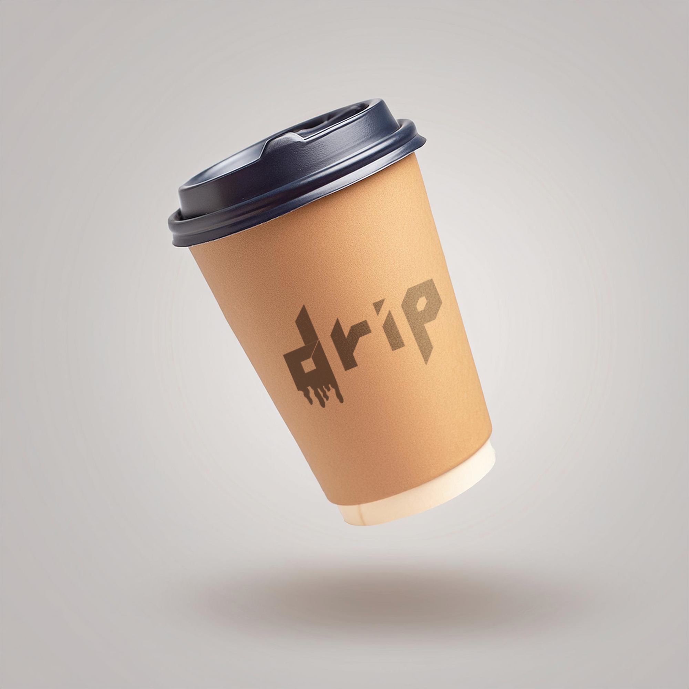

Drip Coffee Passion Project

Overview
Drip Coffee is a self-directed branding and marketing project created to explore the development of a visual identity for a fictional coffee shop. The project focused on creating a cohesive brand presence and applying the identity across physical and print-based marketing materials.
Role
As the designer, I was responsible for developing the visual identity and supporting marketing materials from concept to creation. The specific roles included:
The Challenge
The project began with the development of a logo and visual identity for Drip Coffee. The goal was to create a recognizable identity that could translate effectively across both physical and print applications.
Once the logo direction was established, I explored how the identity could be applied to real-world customer touchpoints, including storefront signage, business cards, menu, and print advertising.
The Process and Tools
I began by establishing the visual direction for Drip Coffee and developing a logo that could serve as the foundation for the brand. From there, I explore how the identity could translate across different physical and promotional applications, considering the purpose, format, and customer experience of each piece.
The project incorporated Adobe Illustrator for logo and graphic development, Adobe InDesign for the magazine advertisement and menu, and Adobe Photoshop for the mockups. The mockups help visualize how the branding would appear in real-world environments and applications.
The completed identity was then applied across several areas of the project, including storefront branding, menu design, branded materials, and print advertising.
Logo and Brand Identity
The logo served as the foundation for the Drip Coffee visual identity, establishing the core visual direction that was carried throughout the remaining applications.

Original drawing of logo idea.

Finalized logo.
Storefront and Environmental Branding
I applied the established identity to a storefront concept, including exterior signage, to demonstrate how the brand could create a recognizable physical presence.

Mockup of front of store with menu.
Mockup of the sign on the storefront.
Menu Design
The menu extended the visual identity into the customer experience, combining the established branding with a clear and organized layout for presenting the coffee shop's offerings.
Can't see the document preview? Click here to download the PDF directly.
Branded Applications
I developed additional branding touchpoints, including business cards and a custom coffee cup, to demonstrate how the identity could remain consistent across everyday customer interactions.
The business card went through an initial design and subsequent redesign as I refined the visual direction and application of the brand.

Original design of business card.

Redesign of business card.
The redesigned version refined the visual hierarchy and brought the business card into closer alignment with the overall Drip Coffee brand identity.

Mockup of coffee cup design.
Magazine Advertisement
Using Adobe InDesign, I created a magazine advertisement that applied the Drip Coffee identity to a traditional print marketing format. The design focused on maintaining the established visual language while adapting it to a promotional layout.
Can't see the document preview? Click here to download the PDF directly.
The Final Outcome
The completed project established a cohesive visual identity for Drip Coffee and demonstrated how the brand could be carried across an entire customer experience. From the logo and storefront to the menu, coffee cup, business cards, and magazine advertisement, each application reinforced the same visual identity while serving a distinct purpose.